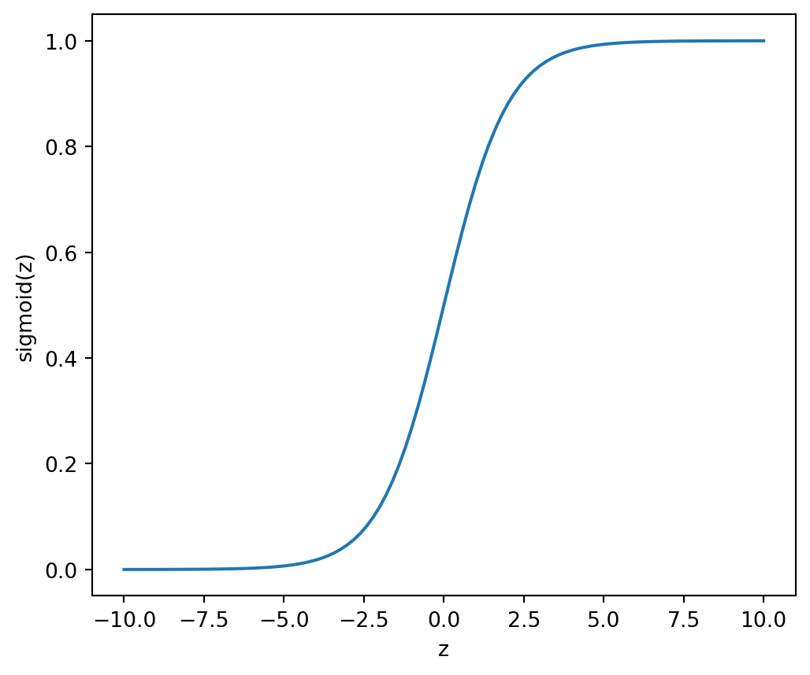
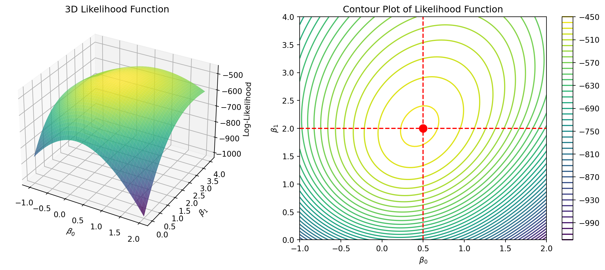
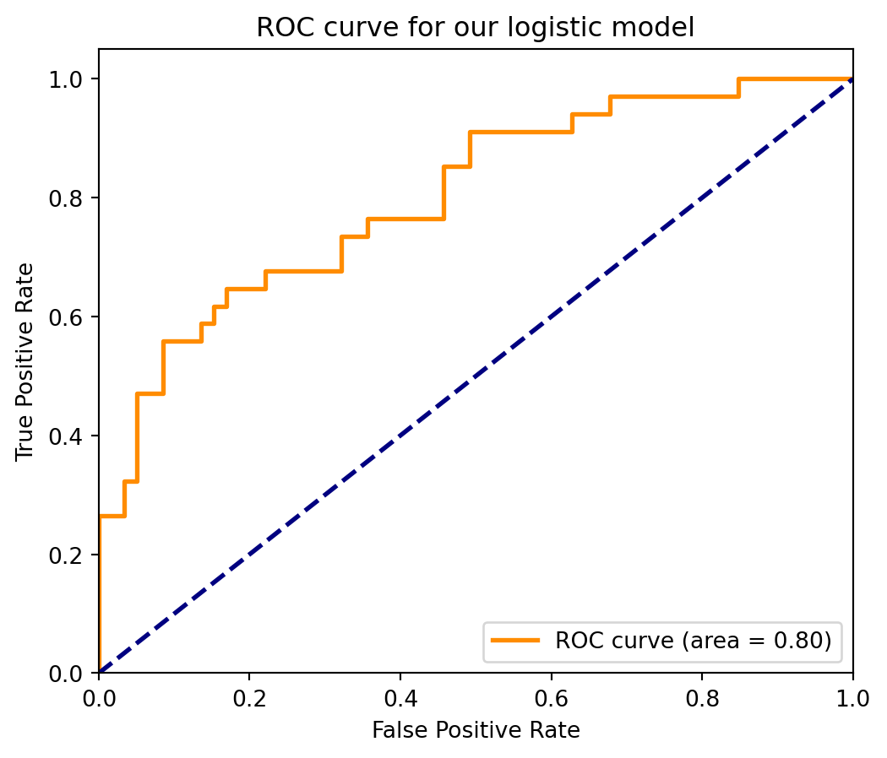

Introduction to Statistical Learning
Linear Models - Part B - Class 4
Giora Simchoni
gsimchoni@gmail.com and add #intro2sl in subject
Stat. and OR Department, TAU
Extending the linear model
Categorical features with \(k\) levels
When \(k = 2\):
- If \(x\) indicates whether person “has tattoos” or “no tattoos”
- Define: \(x_i = \begin{cases} 1 & \text{if person } i \text{ has tattoos,} \\ 0 & \text{otherwise.} \end{cases}\)
- Model: \(y_i = \beta_0 + \beta_1x_i + \varepsilon_i\)
- Meaning: \(\beta_0 = E(y|\text{no tattoos}) \quad \beta_1 = E(y|\text{has tattoos}) - E(y|\text{no tattoos})\)
Question: how would you test if “tattoo” has effect on \(y\)?
Question: what if \(x_i = \begin{cases} 1 & \text{if person } i \text{ has tattoos} \\ -1 & \text{otherwise.} \end{cases}\)
Categorical features with \(k\) levels: \(k > 2\)
- If \(x\) is a person’s profession (carpenter, gardener, or teacher)
Question: what if we just had \(x_{i} = \begin{cases} 0 & \text{if person } i \text{ is a teacher} \\ 1 & \text{if person } i \text{ is a carpenter} \\ 2 & \text{if person } i \text{ is a gardener} \end{cases}\)
- Define \(k - 1\) indicators:
\(x_{i1} = \begin{cases} 1 & \text{if person } i \text{ is a carpenter,} \\ 0 & \text{otherwise.} \end{cases}\), \(x_{i2} = \begin{cases} 1 & \text{if person } i \text{ is a gardener,} \\ 0 & \text{otherwise.} \end{cases}\)
- Why \(k - 1\) indicators?
- Model: \(y_i = \beta_0 + \beta_1x_{i1} + \beta_2x_{i2} + \varepsilon_i\)
- Meaning: \(\beta_1 = E(y|\text{carpenter}) - E(y|\text{teacher}); \quad \beta_2 = E(y|\text{gardener}) - E(y|\text{teacher})\)
Question: how would you test if “profession” has effect on \(y\)?
Interactions
A multiplicative effect?
Interactions: residuals plots

Consider adding an interaction term to the model: \(x_1 \cdot x_2\)
Interactions: adding an interaction term

\(y_i = \beta_0 + \beta_1x_{i1} + \beta_2 x_{i1} + \beta_3 x_{i1} \cdot x_{i2}+ \varepsilon_i\)
Note: in multiplicative models we usually add the features without interactions to the model (“main effects”), even if their P-value is not small.
Non-linear relations

Consider adding polynomial terms \(x^2_1, x^3_1\), …
Plynomial regression: Beware 1

Plynomial regression: Beware 1
Quadratic:
| coef | std err | t | P>|t| | [0.025 | 0.975] | |
| const | 40.4091 | 2.741 | 14.744 | 0.000 | 34.804 | 46.015 |
| x1 | -0.2133 | 0.035 | -6.115 | 0.000 | -0.285 | -0.142 |
| x2 | 0.0004 | 9.84e-05 | 4.275 | 0.000 | 0.000 | 0.001 |
Cubic:
| coef | std err | t | P>|t| | [0.025 | 0.975] | |
| const | 44.2249 | 5.961 | 7.419 | 0.000 | 32.015 | 56.435 |
| x1 | -0.2945 | 0.118 | -2.500 | 0.019 | -0.536 | -0.053 |
| x2 | 0.0009 | 0.001 | 1.328 | 0.195 | -0.000 | 0.002 |
| x3 | -8.701e-07 | 1.2e-06 | -0.722 | 0.476 | -3.34e-06 | 1.6e-06 |
Plynomial regression: Beware 2

Other issues with linear regression
Why “not significant”?

==============================================================================
coef std err t P>|t| [0.025 0.975]
------------------------------------------------------------------------------
const 0.0886 0.108 0.819 0.415 -0.126 0.303
X1 0.7875 0.568 1.386 0.169 -0.340 1.915
X2 0.8772 1.144 0.767 0.445 -1.393 3.147
==============================================================================Collinearity
- Collinearity is when a feature is in the span of other features
- Usually it is not exactly in the span but near the span
- In the case of exact collinearity: the matrix \(X^TX\) is singular, no unique solution
- In the case of approximate collinearity:
- If \(X_1 \approx X_2\), then: \(y = X_1; \quad y = X_2; \quad y = \frac{1}{2}X_1 + \frac{1}{2}X_2;\quad y = 1000X_1 - 999X_2\) are the same models!
- the solution is not numerically stable
- \(SE(\hat{\beta})\) grows, \(t_{obs}\) value decreases, feature is “masked” in inference
- Explore your data with a correlation matrix, many other metrics
High-leverage and Outlier observations
An observation with high leverage has an extreme \(x\) value
For simple linear regression: \(h_i = \frac{1}{n} + \frac{(x_i - \bar{x})^2}{\sum (x_{i'} - \bar{x})^2}\)
Observations with large \(h_i\) \(\Rightarrow\) large effect on \(SE(\hat{\beta})\)
If such an observation also has an unusual \(y\) – an outlier \(\Rightarrow\) the model changes a lot if removed
High-leverage and Outlier observations

Consider removing (careful!).
Excluding high-leverage + outlier

Logistic Regression
What about classification?
Let’s start with the simplest (and most important) case of two-class classification:
- Sick vs. healthy
- Buy vs. won’t buy
- Dog vs. cat
As before, we have \(T = (\mathbf{X}, \mathbf{y})\) a sample of size \(n\)
For now, keep assuming \(x \in \mathbb{R}^p\) is numeric
- Can we use the OLS mechanism we have built to build a classification model?
- For sure we can, if we encode \(y=\text{sick} \Rightarrow y=1,\;\;y=\text{healthy} \Rightarrow y=0\), we have numeric \(y\)
What is wrong with using OLS for classification?
- If we encode \(y\) as above what is \(E(y|x)\)? It is \(P(y=\text{sick}|\;\text{data})\) — a clearly interesting quantity
Problem: as a probability, \(0\leq P(y=\text{sick}|\;\text{data}) \leq 1.\) But model predictions \(x^T\hat{\beta}\) can fall outside the legal range!
Another problem: can we make the model assumptions of normal \(\epsilon\)? No — because \(y\) can only be \(0\) or \(1\)
- The idea: try to create an approach that is similar to OLS, but more fitting for classification, taking into account the limited range of values and the need for a sensible statistical model
Logistic regression
Deals with the two problems above
We start from assuming a model: \[\log\frac{P(y=1|x)}{P(y=0|x)} = \log\frac{P(y=1|x)}{1 - P(y=1|x)} = \text{logit}(P(y=1|x)) = x^T\beta\]
Notice that now all values are legal: \[ 0\leq P(y=1|x) \leq 1 \;\; \Leftrightarrow\;\; -\infty \leq \log\frac{P(y=1|x)}{P(y=0|x)} \leq \infty.\]
The Sigmoid function
Another way of writing this:
\[P(y=1|x) = \text{sigmoid}(x^T\beta) = \frac{\exp(x^T\beta)}{1+\exp(x^T\beta)} \quad\quad P(y=0|x) = 1- P(y=1|x) = \frac{1}{1+\exp(x^T\beta)}\]

Fitting a logistic regression
Given training data \(T\), we want to find the best coefficients \(\hat{\beta}\)
This is done by maximum likelihood, finding \(\beta\) to maximize: \[L(\beta|X, y) = \prod_{i = 1}^n{P(y_i|x_i;\beta)} = \prod_{i = 1}^n{P(y_i = 1|x_i;\beta)^{y_i}P(y_i = 0|x_i;\beta)^{1-y_i}}\]
\[\max_\beta \prod_{i=1}^n \left(\frac{\exp(x_i^T\beta)}{1+\exp(x_i^T\beta)}\right)^{y_i} \left(\frac{1}{1+\exp(x_i^T\beta)}\right)^{1-y_i}\]
- The solution is \(\hat{\beta}\), the logistic regression coefficients estimates
Logistic Regression Likelihood

Prediction and interpretation of coefficients
Predicting on \(x \in Te\): \[\widehat{P(y=1|x)} = \frac{\exp(x^T\hat{\beta})}{1+\exp(x^T\hat{\beta})}\;\; \Rightarrow\;\; \hat{y} = \begin{cases} 1 & \mbox{if } \widehat{P(y=1|x)}> 0.5 \\ 0 & \mbox{otherwise}\end{cases}\]
We can write our model as: \[\log\frac{P(y=1|x)}{P(y=0|x)} = x^T\beta\]
The expression on the left is called the log odds: log of the ratio of “positive” vs “negative” probability
Interpretation: \({\beta}_j\) is the change in the log odds from a change of 1 unit in \(x_j\).
For example, if \({\beta}_j=1\) then when \(x_j=1\) vs \(x_j=0\) the log odds increase by \(1\), and the odds increase times \(e=2.72\)
Example: SAHeart
Example: South African Hearth Disease Data
sbp tobacco ldl adiposity famhist typea obesity alcohol \
row.names
1 160 12.00 5.73 23.11 Present 49 25.30 97.20
2 144 0.01 4.41 28.61 Absent 55 28.87 2.06
3 118 0.08 3.48 32.28 Present 52 29.14 3.81
4 170 7.50 6.41 38.03 Present 51 31.99 24.26
5 134 13.60 3.50 27.78 Present 60 25.99 57.34
age chd
row.names
1 52 1
2 63 1
3 46 0
4 58 1
5 49 1
No. of train rows: 369, no. train of cols: 9
No. of test rows: 93, no. test of cols: 9
no. of obs in train y: 369
no. of obs in test y: 93SAHeart: LR with statsomdels
Optimization terminated successfully.
Current function value: 0.513971
Iterations 6
Logit Regression Results
==============================================================================
Dep. Variable: chd No. Observations: 369
Model: Logit Df Residuals: 359
Method: MLE Df Model: 9
Date: Tue, 29 Oct 2024 Pseudo R-squ.: 0.1994
Time: 14:23:18 Log-Likelihood: -189.66
converged: True LL-Null: -236.90
Covariance Type: nonrobust LLR p-value: 2.041e-16
==================================================================================
coef std err z P>|z| [0.025 0.975]
----------------------------------------------------------------------------------
const -5.3373 1.478 -3.612 0.000 -8.234 -2.441
sbp 0.0081 0.006 1.262 0.207 -0.004 0.021
tobacco 0.0563 0.029 1.926 0.054 -0.001 0.114
ldl 0.1676 0.064 2.599 0.009 0.041 0.294
adiposity 0.0273 0.033 0.823 0.411 -0.038 0.092
typea 0.0411 0.014 3.005 0.003 0.014 0.068
obesity -0.0820 0.049 -1.661 0.097 -0.179 0.015
alcohol 0.0019 0.006 0.344 0.731 -0.009 0.013
age 0.0473 0.013 3.530 0.000 0.021 0.074
famhist_Absent -0.8135 0.255 -3.191 0.001 -1.313 -0.314
==================================================================================SAHeart: LR Test Performance
| pred:no | pred:yes | |
|---|---|---|
| true:no | 52 | 7 |
| true:yes | 15 | 19 |
Accuracy: 0.76, Misclassification loss: 0.24Classification Model Evaluation
Measuring Classification Performance
Different errors have different costs/value.
Summarize performance in different ways that capture different types of errors:
| Pred | |||
|---|---|---|---|
| Real | Pos | Neg | Total |
| Pos | \(TP\) | \(FN\) | \(P\) |
| Neg | \(FP\) | \(TN\) | \(N\) |
| Total | \(\hat{P}\) | \(\hat{N}\) |
\(P = \sum_{i=n+1}^{n+m} y_i\) number of positive examples, similarly \(N\).
\(\hat{P} = \sum_{i=n+1}^{n+m} \hat{y}_i\) number of positive predictions, similarly \(\hat{N}\).
\(TP = \sum_{i=n+1}^{n+m} y_i \hat{y}_i\) number of true positives, \(FP = \hat{P}-TP\)
\(TN = \sum_{i=n+1}^{n+m} (1-y_i) (1-\hat{y}_i)\) number of true negatives, \(FN = \hat{N}-TN\)
| Pred | |||
|---|---|---|---|
| Real | Pos | Neg | Total |
| Pos | \(TP\) | \(FN\) | \(P\) |
| Neg | \(FP\) | \(TN\) | \(N\) |
| Total | \(\hat{P}\) | \(\hat{N}\) | \(m\) |
Accuracy: \(P(Correct) = \;(TN+TP)/m\)
Prediction error: \(P(Error) = \;(FN+FP)/m\)
Precision+ (positive predictive value): \(P(True + | Pred +) = \;TP/\hat{P}\)
Recall+ (sensitivity, true positive rate): \(P(Pred + | True +) = \;TP/P\)
False positive rate: \(P(Pred + | True -) = \;FP/N\)
Harmonic mean of precision and recall: \(\;F_1 = 2 \times \frac{Precision \times Recall}{Precision + Recall}\)
| pred:no | pred:yes | |
|---|---|---|
| true:no | 52 | 7 |
| true:yes | 15 | 19 |
precision recall f1-score support
0 0.78 0.88 0.83 59
1 0.73 0.56 0.63 34
accuracy 0.76 93
macro avg 0.75 0.72 0.73 93
weighted avg 0.76 0.76 0.76 93
All is still based on that cutoff, 0.5!
Classification evaluation: different goals
We can think of several different prediction goals, all potentially important:
- Classify correctly — make few (weighted) errors on test set or new prediction points
- Predict probabilities well: \(\widehat{P(y=1|x)} \approx P(y=1|x)\) for new points
- Rank well: given multiple prediction points, predict which one is more likely to have \(y = 1\).
These different tasks can reflect in the loss function / model evaluation task:
- Correct classification: misclassification loss as above, also precision, recall etc.
- Good probability prediction: using Bernoulli loss / likelihood: \[L(y,\hat{p}) = \hat{p}^y (1-\hat{p})^{(1-y)}\]
- How do we measure ranking perofrmance of a model on a test set?
The ROC Curve
The idea: to evaluate ranking performance, do not set the threshold \(0.5\) but check what happens at all possible thresholds:
- True positive rate: what % of the positive observations pass the threshold?
- False positive rate: what % of the negative observations pass the threshold?
- The ROC curve plots TPR vs FPR for all possible threholds: if the model ranks well, for high thresholds we will have \(FPR\approx 0\), while for low thresholds we will have \(TPR \approx 1\)
- Note that even if \(\widehat{P(y=1|x)}\) predicts probabilities badly, or even if the predictions are not in the range \([0,1]\), the ranking can still be good

The Area Under the Curve (AUC)
For a random ranking: \(FPR \approx TPR\) at every threshold, so we are around the diagonal \(x=y\): \[AUC\approx 0.5\]
For a perfect ranking model: at high thresholds, \(FPR=0\), at low thresholds \(TPR=1\), hence: \[AUC=1.\]
- Very nice interpretation of AUC: Assume the test set has \(m_1\) ones (\(y=1\)) and \(m_0\) zeros, then AUC is the % of correctly ranked pairs with different response: \[AUC = \frac{ \#\left\{(i,j): y_i = 0, y_j=1 \mbox{ and } \hat{p}_i < \hat{p}_j\right\}}{m_1\times m_0}\]